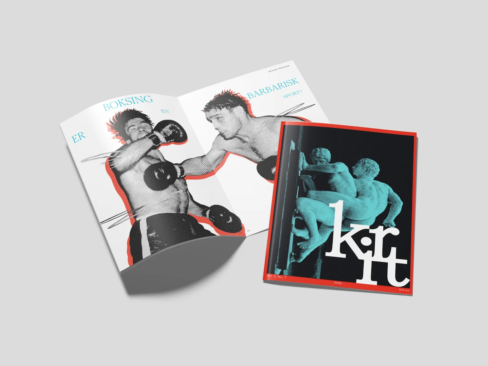
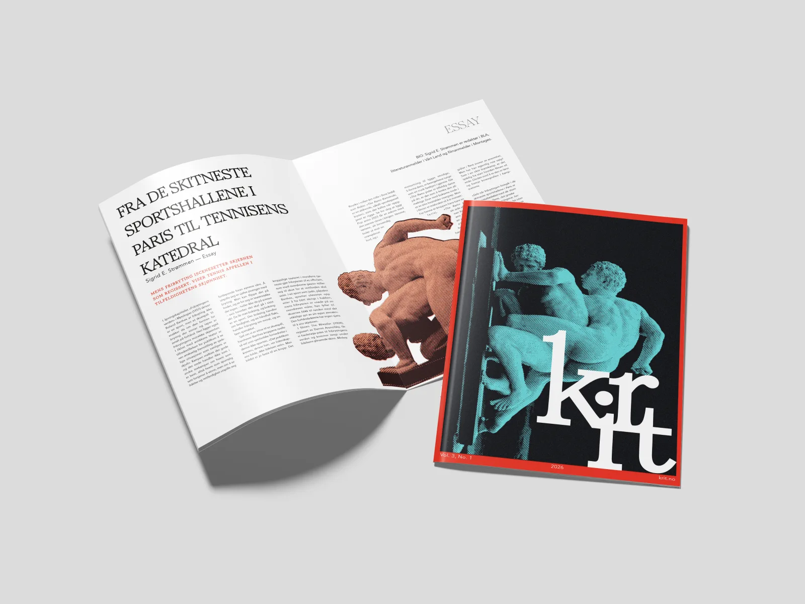

Krit litteraturtidsskrift
Dette prosjektet utforsker hvordan redaksjonell design kan formidle litterært innhold gjennom en tydelig visuell identitet. Gjennom arbeid med typografi, bildebruk og komposisjon undersøker designet hvordan tekst og form kan samspille for å skape en helhetlig leseopplevelse.
Prosess

Uttrykket manglet en tydelig struktur og fremstod fragmentert. Flere ulike visuelle grep ble brukt om hverandre – som varierende fontvekter, fotografier i både svart-hvitt og med fargefiltre, samt innslag av illustrasjon – uten at de var forankret i et helhetlig system.


Det tok tid før jeg valgte å gå bort fra Jambore-fonten. Jeg ble tiltrukket av dens organiske og menneskelige uttrykk, som i utgangspunktet resonnerte godt med det personlige og kroppslige innholdet i magasinets tekster.
I tillegg oppsto det en interessant, nesten tilfeldig kobling mellom fonten og prosjektet: navnet KRIT speiler etymologisk opphavet til fontens designer, Tom Chalky – en referanse som forsterket konseptets identitet på et mer subtilt nivå. Jamboree Display Font Family
Til tross for disse kvalitetene viste fonten seg å ha begrenset lesbarhet i større tekstgrader, særlig i overskrifter. Samtidig ga den logoen et uttrykk som opplevdes for lekent og uformelt i møte med det redaksjonelle innholdet.
Valget om å gå bort fra Jambore handlet derfor om å prioritere tydelighet og typografisk presisjon, samtidig som det overordnede uttrykket ble strammet opp.
Fontvalg
Brukes til titler (f.eks. Den hvite t-skjorten)
Markerer sjanger (essay, kritikk...) "sekundær info"
Innholdsfortegnelsen: brukt selektivt på verkstitler for å markere dem som primært nivå der
Avenir Book & Book Oblique
- 8,5 pt ≈ 11.3 px ≈ 0.71 rem
- Linjeavstand: 12pt
Avenir Book:
Mikkels sønn forbi, Mikkel 2. Og også han snudde seg og så mot meg. Det var sånn jeg skjønte at Mikkel 2 var Mikkels sønn. Han her var kanskje femti. Og ikke like kjekk.
Avenir Book Oblique:
«Baseball, football, basketball – these quintessentially American pastimes are recognizably sports because they involve play: they are games.»
Fargevalg
Fargepaletten i hver utgave av KRIT er basert på komplementære eller nærliggende kontraster, med varierende grad av metning og renhet for å justere ønsket intensitet.
Dette gir hver utgave et tydelig og selvstendig visuelt uttrykk, samtidig som det overordnede systemet opprettholder en konsistent og gjenkjennelig identitet.
| HEX | RGB | CMYK | |||||||
|---|---|---|---|---|---|---|---|---|---|
|
#00BCD0
|
R0
|
G188
|
B208
|
C100
|
M10
|
Y0
|
K18
|
||
|
#F04C38
|
R240
|
G76
|
B56
|
C0
|
M68
|
Y77
|
K6
|
||
System på bildebruk
Halftone-effekten er gjennomgående og benyttes på alle bilder for å skape et helhetlig visuelt uttrykk.

Oppslag: Oransje brukes som bakgrunn for litterær tekst og essay, mens blå benyttes bak kritikk. Dette bidrar til å differensiere innholdstypene visuelt.

I brødtekst: Primærfargene legges over bildene med redusert opasitet for å skape variasjon, dybde og et mer dynamisk uttrykk.

